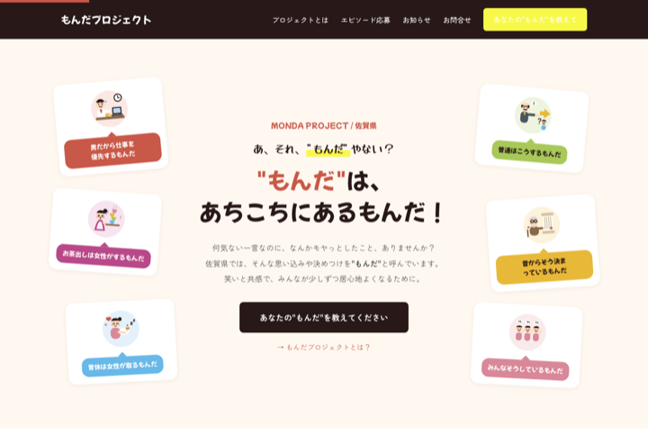
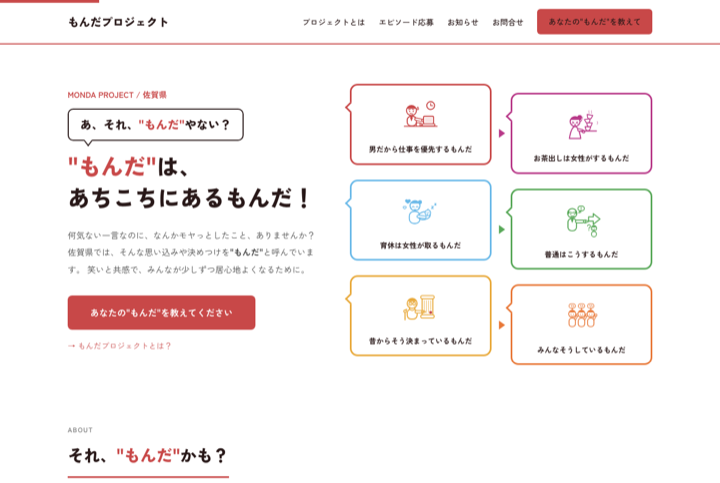
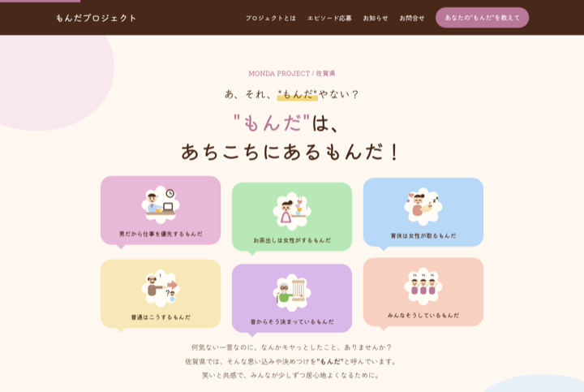

ご確認用インデックス｜佐賀県 もんだプロジェクト
3つのデザイン案をご用意しました。各案の画像またはボタンからモックアップをご覧いただけます。
元になったポスター案(PDF)もあわせてご確認ください。スマートフォンでもご覧いただけます。

プランA：カラフルポップ風
塗りつぶしのカラフルな吹き出しがポンポンと湧き出す、エネルギッシュでにぎやかな世界観。ポスターA案の勢いをそのままWebにしました。

プランB：すっきり知的風
白地にカラーの枠線吹き出しを矢印でつなぐ、整理されて読みやすいトーン。情報がフロー状に流れるポスターB案のWeb展開です。

プランC：やさしいパステル風
クリーム地にパステルの吹き出しがふわふわ浮かぶ、温かく責めない包容力のある世界観。ポスターC案の柔らかさを活かしました。
※ モックアップは静的なデザイン確認用です。フォームなど一部の機能は動作しません。
※ ポスターPDFは新しいタブで開きます。